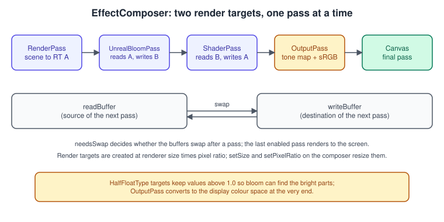
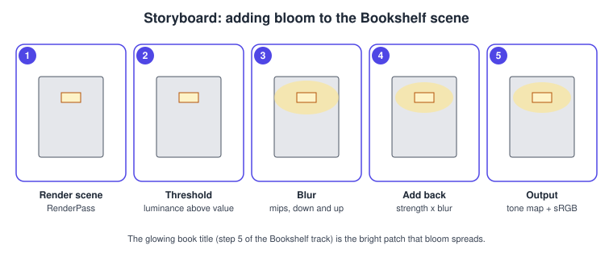
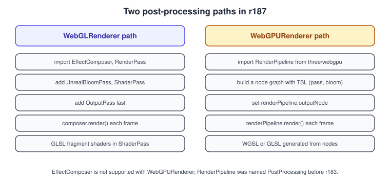

three.js Post-processing
|
This content was generated with the assistance of AI and should be verified against the official documentation before being relied on in production. |
Post-processing means drawing the scene into an off-screen image instead of the canvas, then running one or more full-screen passes
over that image before showing the result: a glow around bright objects, a vignette, a colour grade, an outline, depth of field. In
three.js the classic tool is EffectComposer from the addons, which chains passes for the WebGLRenderer. The WebGPURenderer has a
different mechanism, RenderPipeline, built from TSL nodes. This page explains both, with the options that matter, and ends with the
checklist of mistakes that make bloom look wrong.
The facts were checked in November 2026 against three.js r187 (npm three@0.187.0). The EffectComposer code runs on every browser
with WebGL 2; the RenderPipeline code needs a browser with WebGPU, or accepts the automatic WebGL 2 fallback of
WebGPURenderer. RenderPipeline was named PostProcessing until r183, so older tutorials use the old name. The project setup is
the Vite one of Getting Started with three.js.
This is the "bloom" step of the Bookshelf three.js track. It follows the PBR shelf and the click-to-pull-out interaction
(Interaction, Picking and Controls) and comes before the
switch to WebGPURenderer, where the glowing title is a TSL material
(WebGPURenderer and TSL). The framebuffer ideas underneath are
the ones of Framebuffers and Render to Texture; the generic
effects are described in Transparency, Blending and Post-processing.
The EffectComposer model

An EffectComposer owns two render targets, renderTarget1 and renderTarget2, and an ordered list of passes. Each pass reads
from one target (readBuffer) and writes to the other (writeBuffer); after a pass that changed the picture the two swap, so the
output of one pass is the input of the next. The last enabled pass writes to the canvas instead of a target. This is the same
"ping-pong" technique used in the raw framebuffer chapters, wrapped in a class.
Class (addon path under three/addons/postprocessing/) |
What it does |
|---|---|
|
Owns the targets and the pass list. |
|
Renders a scene with a camera into the first target. Always first (it does not read the buffer). Options: |
|
The glow. Constructor |
|
Runs your own fragment shader over the image. The shader reads the previous result from the uniform |
|
Applies the renderer’s tone mapping and converts to the output colour space. Put it last. |
|
Anti-aliasing for the cases where the render target has no multisampling. |
|
Ready-made effects in the same folder. Check the official examples before writing your own. |
Per-pass properties
| Property | Meaning |
|---|---|
|
|
|
Whether the buffers swap after the pass. Passes that draw on top of the previous result without replacing it set |
|
Set by the composer on the last enabled pass; do not set it by hand. |
|
Whether the pass clears its target before drawing. |
|
Called by |
HDR: why the buffers are half float
Bloom needs to know which pixels are brighter than the display can show. If the render target stored 8-bit values, anything above
1.0 would be clipped before the bloom pass sees it. The composer therefore creates its targets as HalfFloatType, which can hold values above 1, and applies no tone mapping while rendering into them: the renderer only tone-maps when it draws to the canvas.
Tone mapping and the sRGB conversion are done at the end by OutputPass. This is also why forgetting OutputPass makes the scene look dark and
flat, and why setting renderer.toneMapping has no visible effect until you add it. Background reading for the idea is in
Colour Spaces, HDR and Tone Mapping, and the three.js side in
Textures and Colour Management.
Example 1: bloom for the Bookshelf
The module below renders the GLB shelf, makes one book’s title emissive with an intensity above 1, and adds bloom. The scene
contains an EffectComposer with exactly the passes of the official bloom example: RenderPass, UnrealBloomPass, OutputPass.

import * as THREE from 'three';
import { OrbitControls } from 'three/addons/controls/OrbitControls.js';
import { GLTFLoader } from 'three/addons/loaders/GLTFLoader.js';
import { EffectComposer } from 'three/addons/postprocessing/EffectComposer.js';
import { RenderPass } from 'three/addons/postprocessing/RenderPass.js';
import { UnrealBloomPass } from 'three/addons/postprocessing/UnrealBloomPass.js';
import { OutputPass } from 'three/addons/postprocessing/OutputPass.js';
const renderer = new THREE.WebGLRenderer({ antialias: true });
renderer.setPixelRatio(Math.min(window.devicePixelRatio, 2));
renderer.setSize(window.innerWidth, window.innerHeight);
renderer.toneMapping = THREE.ACESFilmicToneMapping; // applied by OutputPass
renderer.toneMappingExposure = 1.0;
document.body.appendChild(renderer.domElement);
const scene = new THREE.Scene();
scene.background = new THREE.Color(0x101018);
const camera = new THREE.PerspectiveCamera(40, window.innerWidth / window.innerHeight, 0.1, 100);
camera.position.set(0, 1.4, 4);
new OrbitControls(camera, renderer.domElement).target.set(0, 1, 0);
scene.add(new THREE.HemisphereLight(0xffffff, 0x303040, 0.8));
const lamp = new THREE.PointLight(0xffd9a0, 40);
lamp.position.set(1.5, 2.5, 2);
scene.add(lamp);
const gltf = await new GLTFLoader().loadAsync('/bookshelf.glb');
scene.add(gltf.scene);
// a glowing title strip on the first book: emissive colour with intensity above 1
const title = new THREE.Mesh(
new THREE.PlaneGeometry(0.18, 0.04),
new THREE.MeshStandardMaterial({
color: 0x000000,
emissive: new THREE.Color(0xffc857),
emissiveIntensity: 4, // HDR value, above the bloom threshold
})
);
title.position.set(0, 1.2, 0.5);
scene.add(title);
// --- post-processing -------------------------------------------------------
const composer = new EffectComposer(renderer);
composer.addPass(new RenderPass(scene, camera));
const bloomPass = new UnrealBloomPass(
new THREE.Vector2(window.innerWidth, window.innerHeight),
0.8, // strength
0.4, // radius
1.0 // threshold: only values above 1.0 glow
);
composer.addPass(bloomPass);
composer.addPass(new OutputPass());
renderer.setAnimationLoop(() => composer.render());
window.addEventListener('resize', () => {
const w = window.innerWidth;
const h = window.innerHeight;
camera.aspect = w / h;
camera.updateProjectionMatrix();
renderer.setSize(w, h);
composer.setSize(w, h); // resizes the targets and every pass
});How the glow comes about: UnrealBloomPass keeps only the part of the image brighter than threshold, blurs it through a chain
of progressively smaller render targets (a mip-like pyramid, then back up), and adds the result to the original scaled by strength.
The radius option controls how far the blurred light spreads. The parameters:
| Parameter | Default in the example | Effect |
|---|---|---|
|
the canvas size |
The size of the first bloom target; the pass resizes itself with |
|
|
Intensity of the added glow. Too high washes the image out. |
|
|
How wide the glow spreads; larger values blend the mip levels more. |
|
|
Luminance below which nothing glows. With a value of |
Selective bloom without extra passes
Bloom applies to the whole image, so everything over the threshold glows, including a white wall or a specular highlight. The
simplest "selective" bloom is to control what exceeds the threshold: keep the ordinary materials in the 0 to 1 range, set threshold
at or just below 1.0, and give the glowing objects an HDR emissiveIntensity or an HDR colour such as color.multiplyScalar( 4 )
with toneMapped: false on a MeshBasicMaterial. The official webgl_postprocessing_unreal_bloom_selective example shows the
heavier alternative: a layer holds the glowing objects, the other objects are rendered black in a first composer, and a second
composer adds the two results. Use it only when threshold control is not enough, because it renders the scene twice.
Writing your own ShaderPass
A ShaderPass takes an object with uniforms, vertexShader and fragmentShader. The previous result arrives as the uniform
tDiffuse, and the vertex shader only has to pass the UV through. This vignette darkens the corners:
import { ShaderPass } from 'three/addons/postprocessing/ShaderPass.js';
const VignetteShader = {
name: 'VignetteShader',
uniforms: {
tDiffuse: { value: null }, // filled in by the composer
uOffset: { value: 0.9 },
uDarkness: { value: 1.2 },
},
vertexShader: /* glsl */ `
varying vec2 vUv;
void main() {
vUv = uv;
gl_Position = projectionMatrix * modelViewMatrix * vec4(position, 1.0);
}`,
fragmentShader: /* glsl */ `
uniform sampler2D tDiffuse;
uniform float uOffset;
uniform float uDarkness;
varying vec2 vUv;
void main() {
vec4 texel = texture2D(tDiffuse, vUv);
vec2 uv = (vUv - vec2(0.5)) * vec2(uOffset);
float v = clamp(1.0 - dot(uv, uv) * uDarkness, 0.0, 1.0);
gl_FragColor = vec4(texel.rgb * v, texel.a);
}`,
};
const vignette = new ShaderPass(VignetteShader);
composer.insertPass(vignette, 2); // after RenderPass and bloom, before OutputPassSource: three.js docs: ShaderPass
The pass runs in linear HDR space (before OutputPass), which is the right place for physically motivated effects such as
vignette and glow. Colour grades that expect display-referred values (look-up tables, for instance) belong after OutputPass, with the
caveat that their input is then already tone mapped. The shader language details are in
three.js Custom Shaders (GLSL).
Anti-aliasing with a composer
The antialias: true option of the renderer affects only the default framebuffer, the canvas. A composer renders into its own
targets, which have no multisampling by default, so edges become jagged as soon as you add one. There are two remedies:
import { SMAAPass } from 'three/addons/postprocessing/SMAAPass.js';
// 1. hardware MSAA: give the composer a multisampled half-float target
const size = renderer.getDrawingBufferSize(new THREE.Vector2());
const target = new THREE.WebGLRenderTarget(size.x, size.y, {
type: THREE.HalfFloatType,
samples: 4,
});
const composer = new EffectComposer(renderer, target);
// 2. or a post-process pass, added after the effects and before or after OutputPass
// composer.addPass(new SMAAPass());Source: three.js docs: EffectComposer
MSAA (samples) gives the best quality and costs memory and bandwidth in proportion to the sample count; SMAAPass is a
screen-space approximation that works on any target. See OpenGL
Framebuffers and Render to Texture for how the resolve works underneath.
Sizing and pixel ratio
The composer sizes its targets with the same rule as the renderer: logical size times pixel ratio. When you call
renderer.setPixelRatio after creating the composer, call composer.setPixelRatio( ratio ) as well, then composer.setSize( w, h ).
A composer that was never told about a pixel-ratio change renders at a lower resolution than the canvas, and the image looks blurry
on high-density screens. The full-screen passes are the costly part: halving the pixel ratio quarters their cost.
Performance and disposal
-
Every pass is at least one full-screen draw, and bloom adds a chain of smaller ones. Measure with the timing tools of Performance and Debugging before adding more.
-
Cap the pixel ratio at 2 (many phones report 3).
-
Disable passes that are not needed with
pass.enabled = falserather than removing and re-creating them. -
Use
composer.render( deltaTime )with the real delta if a pass (such asFilmPass) animates. -
When the composer goes away, call
composer.dispose(), andpass.dispose()for passes you created, so that the render targets are released. See Performance and Disposal. -
Do not call
renderer.renderyourself in the same frame ascomposer.render; the composer’sRenderPassalready draws the scene.
The WebGPU path: RenderPipeline and TSL
EffectComposer is built on the WebGLRenderer and is not supported with WebGPURenderer. There, post-processing is a node graph:
pass() renders the scene into a texture node, effects wrap that node, and the final node is assigned to the pipeline’s outputNode.

import * as THREE from 'three/webgpu';
import { pass } from 'three/tsl';
import { bloom } from 'three/addons/tsl/display/BloomNode.js';
const renderer = new THREE.WebGPURenderer({ antialias: true });
renderer.setPixelRatio(Math.min(window.devicePixelRatio, 2));
renderer.setSize(window.innerWidth, window.innerHeight);
renderer.toneMapping = THREE.ReinhardToneMapping;
document.body.appendChild(renderer.domElement);
await renderer.init(); // wait for the adapter, device and (if needed) the WebGL 2 fallback
// scene and camera as in the WebGL version
const renderPipeline = new THREE.RenderPipeline(renderer);
const scenePass = pass(scene, camera);
const scenePassColor = scenePass.getTextureNode('output');
const bloomNode = bloom(scenePassColor);
bloomNode.threshold.value = 0.0;
bloomNode.strength.value = 1.0;
bloomNode.radius.value = 0.0;
renderPipeline.outputNode = scenePassColor.add(bloomNode);
renderer.setAnimationLoop(() => renderPipeline.render());
window.addEventListener('resize', () => {
camera.aspect = window.innerWidth / window.innerHeight;
camera.updateProjectionMatrix();
renderer.setSize(window.innerWidth, window.innerHeight);
});The correspondences between the two paths:
| WebGLRenderer | WebGPURenderer |
|---|---|
|
|
|
|
|
|
|
A TSL function on the node; no GLSL strings |
|
Handled by the pipeline, which uses the renderer’s |
|
|
|
|
The WGSL (or GLSL, for the fallback) behind these nodes is generated for you; the mechanism is explained in WebGPURenderer and TSL. The WebGPU API underneath is compared with WebGL in WebGPU Overview and Comparison.
The same graph as a diagram
HDR scene"] RP --> BL["UnrealBloomPass
threshold, blur, add"] BL --> VG["ShaderPass
vignette"] VG --> OP["OutputPass
tone map + sRGB"] OP --> CV[("Canvas")] S -.-> |"WebGPURenderer"| PS["pass() + bloom()
RenderPipeline"] PS -.-> CV
Common mistakes
-
Nothing glows. The threshold is higher than any pixel’s brightness. Print the value or lower the threshold, or raise
emissiveIntensity. -
Everything glows. The threshold is too low, or the lights are so strong that surfaces exceed 1.0.
-
Dark, flat result.
OutputPassis missing, or is not last. -
Jagged edges. The renderer’s
antialiashas no effect on the composer; usesamplesorSMAAPass. -
Blurry on a retina screen. The composer was not told the pixel ratio.
-
Wrong colours after custom passes. A pass that returns display-referred values before
OutputPass, or one that forgets the alpha channel. -
Mixing paths. Importing
three/webgpuand then usingEffectComposerfails: pick the renderer first.
Where the books are outdated
Post-processing is covered in LTJ chapter 11 and TCB chapter 6. The idea of rendering to a texture and running shader passes is unchanged; the code changed.
| Book idea | Today (r187) |
|---|---|
A global |
ES module imports from |
The composer ending with a pass that has |
The composer marks the last enabled pass itself. |
No tone mapping or colour-space step in the chain |
Add |
The older |
|
8-bit render targets and |
Half-float targets; use |
EffectComposer as the only post-processing mechanism |
Still the path for |
References
-
three.js documentation: EffectComposer, UnrealBloomPass, OutputPass, ShaderPass
-
three.js examples: webgl_postprocessing_unreal_bloom, webgl_postprocessing_unreal_bloom_selective, webgpu_postprocessing_bloom
-
three.js manual: three.js manual
-
three.js releases and migration guide: releases, Migration Guide
-
Books: Jos Dirksen, Learning Three.js, 2nd edition (Packt, 2015) and Three.js Cookbook (Packt, 2015)